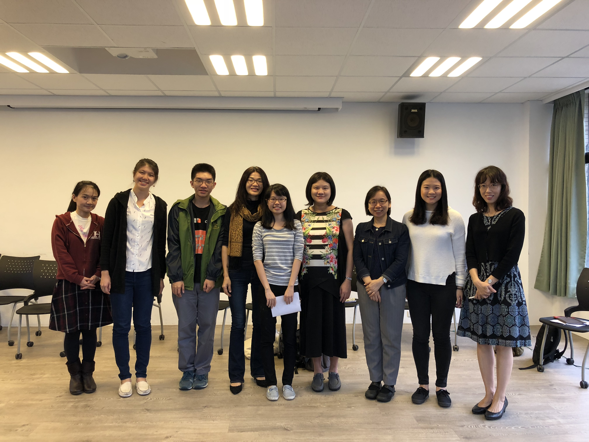
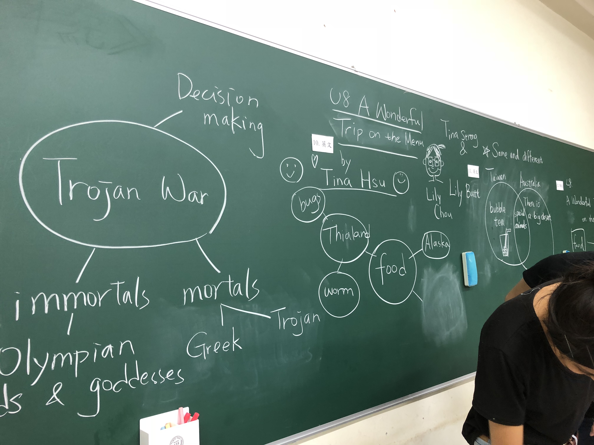
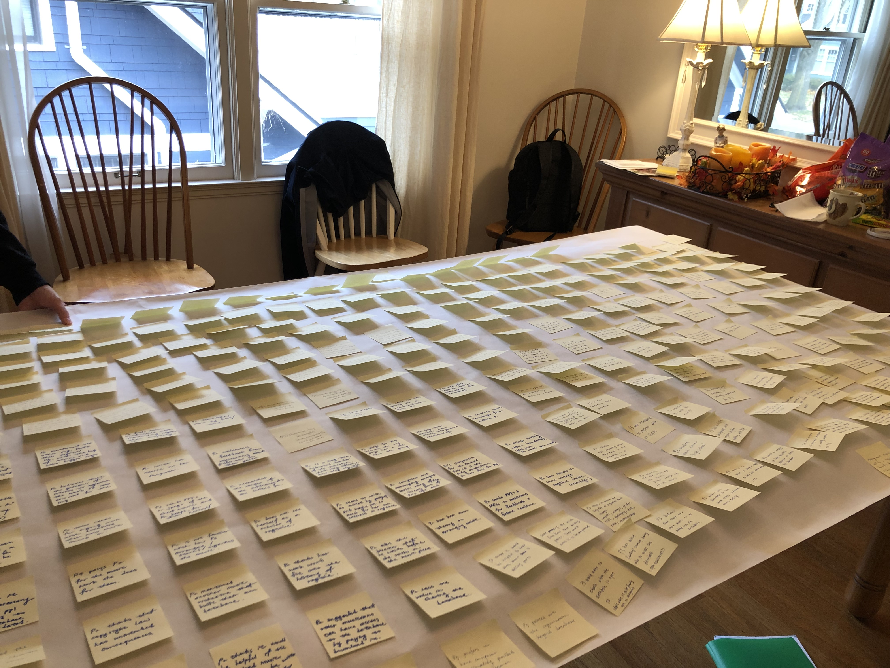

Journey
Literatures, languages, and learning
I have always wanted to become a high school teacher. In the last year of my college days, when I was not sitting in classrooms studying Literatures and imagining what Shakespeare and Milton would say if they were also in the lectures, I was probably on my way to attend classroom observations in local high schools.

In love with designing learning experiences
After college, I was fortunate enough to achieve my childhood dream. I love designing learning experiences to empower learners and enjoy crafting pixel perfect slides and worksheets. The days were a mixture of sweet and sour moments. I like what I am doing, but I hope I can make a greater impact. It was painful to accept the truth that it’s impossible to fully support each and every learner.

From education to Product Design
After work, I biked to nearby universities to audit evening courses. I started with a Project Oriented Programming course and a Human-Computer Interaction course. The experience unfolded a new ground where people, design, and development are tightly connected to solve complicated problems in the world. The more I explore, the more I am fascinated by the approach.
